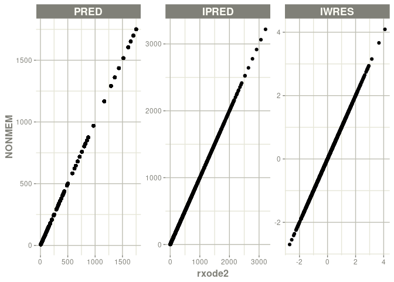
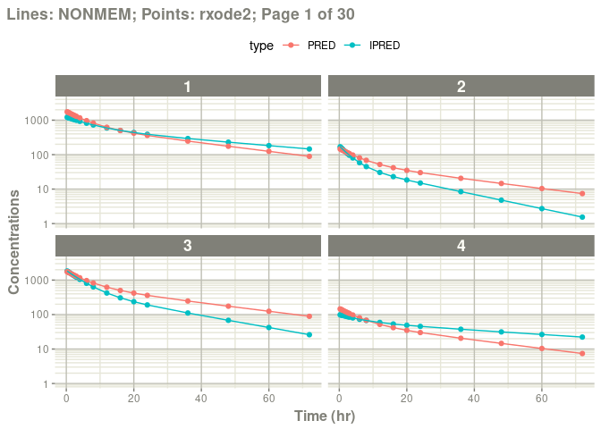

The goal of nonmem2rx is to convert a NONMEM control stream to rxode2 for easy clinical trial simulation in R.
Installation
You can install the development version of nonmem2rx from GitHub with:
# install.packages("devtools")
devtools::install_github("nlmixr2/nonmem2rx")Example
Once nonmem2rx has been loaded, you simply type the location of the nonmem control stream for the parser to start. For example:
library(nonmem2rx)
mod <- nonmem2rx(system.file("mods/cpt/runODE032.ctl", package="nonmem2rx"), lst=".res", save=FALSE)
#> ℹ getting information from '/tmp/RtmpDtx8m8/temp_libpath1d03d175fa626/nonmem2rx/mods/cpt/runODE032.ctl'
#> ℹ reading in xml file
#> ℹ done
#> ℹ reading in phi file
#> ℹ problems reading phi file
#> ℹ reading in lst file
#> ℹ abbreviated list parsing
#> ℹ done
#> ℹ done
#> ℹ splitting control stream by records
#> ℹ done
#> ℹ Processing record $INPUT
#> ℹ Processing record $MODEL
#> ℹ Processing record $THETA
#> ℹ Processing record $OMEGA
#> ℹ Processing record $SIGMA
#> ℹ Processing record $PROBLEM
#> ℹ Processing record $DATA
#> ℹ Processing record $SUBROUTINES
#> ℹ Processing record $PK
#> ℹ Processing record $DES
#> ℹ Processing record $ERROR
#> ℹ Processing record $ESTIMATION
#> ℹ Ignore record $ESTIMATION
#> ℹ Processing record $COVARIANCE
#> ℹ Ignore record $COVARIANCE
#> ℹ Processing record $TABLE
#> ℹ change initial estimate of `theta1` to `1.37034036528946`
#> ℹ change initial estimate of `theta2` to `4.19814911033061`
#> ℹ change initial estimate of `theta3` to `1.38003493562413`
#> ℹ change initial estimate of `theta4` to `3.87657341967489`
#> ℹ change initial estimate of `theta5` to `0.196446108190896`
#> ℹ change initial estimate of `eta1` to `0.101251418415006`
#> ℹ change initial estimate of `eta2` to `0.0993872449483344`
#> ℹ change initial estimate of `eta3` to `0.101302674763154`
#> ℹ change initial estimate of `eta4` to `0.0730497519364148`
#> ℹ read in nonmem input data (for model validation): /tmp/RtmpDtx8m8/temp_libpath1d03d175fa626/nonmem2rx/mods/cpt/Bolus_2CPT.csv
#> ℹ ignoring lines that begin with a letter (IGNORE=@)'
#> ℹ applying names specified by $INPUT
#> ℹ subsetting accept/ignore filters code: .data[-which((.data$SD == 0)),]
#> ℹ done
#> ℹ read in nonmem IPRED data (for model validation): /tmp/RtmpDtx8m8/temp_libpath1d03d175fa626/nonmem2rx/mods/cpt/runODE032.csv
#> ℹ done
#> ℹ read in nonmem ETA data (for model validation): /tmp/RtmpDtx8m8/temp_libpath1d03d175fa626/nonmem2rx/mods/cpt/runODE032.csv
#> ℹ done
#> ℹ changing most variables to lower case
#> ℹ done
#> ℹ replace theta names
#> Warning: there are duplicate theta names, not renaming duplicate parameters
#> ℹ done
#> ℹ replace eta names
#> Warning: there are duplicate eta names, not renaming duplicate parameters
#> ℹ done (no labels)
#> ℹ renaming compartments
#> ℹ done
#> ℹ solving ipred problem
#> ℹ done
#> ℹ solving pred problem
#> ℹ done
mod
#> ── rxode2-based free-form 2-cmt ODE model ──────────────────────────────────────
#> ── Initalization: ──
#> Fixed Effects ($theta):
#> theta1 theta2 theta3 theta4 RSV
#> 1.3703404 4.1981491 1.3800349 3.8765734 0.1964461
#>
#> Omega ($omega):
#> eta1 eta2 eta3 eta4
#> eta1 0.1012514 0.00000000 0.0000000 0.00000000
#> eta2 0.0000000 0.09938724 0.0000000 0.00000000
#> eta3 0.0000000 0.00000000 0.1013027 0.00000000
#> eta4 0.0000000 0.00000000 0.0000000 0.07304975
#>
#> States ($state or $stateDf):
#> Compartment Number Compartment Name
#> 1 1 CENTRAL
#> 2 2 PERI
#> ── μ-referencing ($muRefTable): ──
#> theta eta level
#> 1 theta1 eta1 id
#> 2 theta2 eta2 id
#> 3 theta3 eta3 id
#> 4 theta4 eta4 id
#>
#> ── Model (Normalized Syntax): ──
#> function() {
#> description <- "BOLUS_2CPT_CLV1QV2 SINGLE DOSE FOCEI (120 Ind/2280 Obs) runODE032"
#> validation <- c("IPRED relative difference compared to Nonmem IPRED: 0%; 95% percentile: (0%,0%); rtol=6.89e-06",
#> "IPRED absolute difference compared to Nonmem IPRED: 95% percentile: (2.23e-05, 0.0421); atol=0.00177",
#> "IWRES relative difference compared to Nonmem IWRES: 0%; 95% percentile: (0%,0.05%); rtol=2.04e-05",
#> "IWRES absolute difference compared to Nonmem IWRES: 95% percentile: (5.38e-07, 5.27e-05); atol=1.14e-05",
#> "PRED relative difference compared to Nonmem PRED: 0%; 95% percentile: (0%,0%); rtol=6.41e-06",
#> "PRED absolute difference compared to Nonmem PRED: 95% percentile: (1.41e-07,0.00382) atol=6.41e-06")
#> ini({
#> theta1 <- 1.37034036528946
#> label("log Cl")
#> theta2 <- 4.19814911033061
#> label("log Vc")
#> theta3 <- 1.38003493562413
#> label("log Q")
#> theta4 <- 3.87657341967489
#> label("log Vp")
#> RSV <- c(0, 0.196446108190896, 1)
#> label("RSV")
#> eta1 ~ 0.101251418415006
#> eta2 ~ 0.0993872449483344
#> eta3 ~ 0.101302674763154
#> eta4 ~ 0.0730497519364148
#> })
#> model({
#> cmt(CENTRAL)
#> cmt(PERI)
#> cl <- exp(theta1 + eta1)
#> v <- exp(theta2 + eta2)
#> q <- exp(theta3 + eta3)
#> v2 <- exp(theta4 + eta4)
#> v1 <- v
#> scale1 <- v
#> k21 <- q/v2
#> k12 <- q/v
#> d/dt(CENTRAL) <- k21 * PERI - k12 * CENTRAL - cl * CENTRAL/v1
#> d/dt(PERI) <- -k21 * PERI + k12 * CENTRAL
#> f <- CENTRAL/scale1
#> ipred <- f
#> rescv <- RSV
#> ipred ~ prop(RSV)
#> })
#> }The process steps are below:
Read in the nonmem control stream and convert the model to a
rxode2ui function.Try to determine an endpoint in the model (if possible), and convert to a fully qualified ui model that can be used in
nlmixr2andrxode2(see next section for a work-around)If available,
nonmem2rxwill read the final parameter estimates and update the model. (See below for source)This will read in the nonmem input dataset, and search for the output files with
IPRED,PREDand theETAvalues. The translatedrxode2model is run for the population parameters and the individual parameters. This will then compare the results betweenNONMEMandrxode2to make sure the translation makes sense. This only works whennonmem2rxhas access to the input data and the output with theIWRES,IPRED,PREDand theETAvalues.Converts the upper case NONMEM variables to lower case.
Replaces the NONMEM theta / eta names with the label-based names like an extended control stream.
Replaces the compartment names with the defined compartment names in the control stream (ie
COMP=(compartmenName))
Creating a nlmixr2 compatible model
Depending on the model, not all the residual specifications are translated to the nlmixr2 style residuals. This means the model cannot be immediately used for nlmixr2 estimation (though you can simulate with and without certainty without any modifications)
For example you could have something like:
y <- ipred*(1+eps1)For a model that can do nlmixr2 estimation instead of simply simulation the residual needs to be changed to something like:
cp ~ prop(prop.sd)Since the model when import has most of the translation done already, you can easily tweak the model to have this form.
Here is the same example where the residual errors are not automatically translated to the nlmixr2 parameter style (in this case because of the option determineError=FALSE)
mod <- nonmem2rx(system.file("mods/cpt/runODE032.ctl", package="nonmem2rx"),
determineError=FALSE, lst=".res", save=FALSE)
#> ℹ getting information from '/tmp/RtmpDtx8m8/temp_libpath1d03d175fa626/nonmem2rx/mods/cpt/runODE032.ctl'
#> ℹ reading in xml file
#> ℹ done
#> ℹ reading in phi file
#> ℹ problems reading phi file
#> ℹ reading in lst file
#> ℹ abbreviated list parsing
#> ℹ done
#> ℹ done
#> ℹ splitting control stream by records
#> ℹ done
#> ℹ Processing record $INPUT
#> ℹ Processing record $MODEL
#> ℹ Processing record $THETA
#> ℹ Processing record $OMEGA
#> ℹ Processing record $SIGMA
#> ℹ Processing record $PROBLEM
#> ℹ Processing record $DATA
#> ℹ Processing record $SUBROUTINES
#> ℹ Processing record $PK
#> ℹ Processing record $DES
#> ℹ Processing record $ERROR
#> ℹ Processing record $ESTIMATION
#> ℹ Ignore record $ESTIMATION
#> ℹ Processing record $COVARIANCE
#> ℹ Ignore record $COVARIANCE
#> ℹ Processing record $TABLE
#> ℹ change initial estimate of `theta1` to `1.37034036528946`
#> ℹ change initial estimate of `theta2` to `4.19814911033061`
#> ℹ change initial estimate of `theta3` to `1.38003493562413`
#> ℹ change initial estimate of `theta4` to `3.87657341967489`
#> ℹ change initial estimate of `theta5` to `0.196446108190896`
#> ℹ change initial estimate of `eta1` to `0.101251418415006`
#> ℹ change initial estimate of `eta2` to `0.0993872449483344`
#> ℹ change initial estimate of `eta3` to `0.101302674763154`
#> ℹ change initial estimate of `eta4` to `0.0730497519364148`
#> ℹ read in nonmem input data (for model validation): /tmp/RtmpDtx8m8/temp_libpath1d03d175fa626/nonmem2rx/mods/cpt/Bolus_2CPT.csv
#> ℹ ignoring lines that begin with a letter (IGNORE=@)'
#> ℹ applying names specified by $INPUT
#> ℹ subsetting accept/ignore filters code: .data[-which((.data$SD == 0)),]
#> ℹ done
#> ℹ read in nonmem IPRED data (for model validation): /tmp/RtmpDtx8m8/temp_libpath1d03d175fa626/nonmem2rx/mods/cpt/runODE032.csv
#> ℹ done
#> ℹ read in nonmem ETA data (for model validation): /tmp/RtmpDtx8m8/temp_libpath1d03d175fa626/nonmem2rx/mods/cpt/runODE032.csv
#> ℹ done
#> ℹ changing most variables to lower case
#> ℹ done
#> ℹ replace theta names
#> Warning: there are duplicate theta names, not renaming duplicate parameters
#> ℹ done
#> ℹ replace eta names
#> Warning: there are duplicate eta names, not renaming duplicate parameters
#> ℹ done (no labels)
#> ℹ renaming compartments
#> ℹ done
#> ℹ solving ipred problem
#> ℹ done
#> ℹ solving pred problem
#> ℹ done
print(mod)
#> ── rxode2-based free-form 2-cmt ODE model ──────────────────────────────────────
#> ── Initalization: ──
#> Fixed Effects ($theta):
#> theta1 theta2 theta3 theta4 RSV
#> 1.3703404 4.1981491 1.3800349 3.8765734 0.1964461
#>
#> Omega ($omega):
#> eta1 eta2 eta3 eta4
#> eta1 0.1012514 0.00000000 0.0000000 0.00000000
#> eta2 0.0000000 0.09938724 0.0000000 0.00000000
#> eta3 0.0000000 0.00000000 0.1013027 0.00000000
#> eta4 0.0000000 0.00000000 0.0000000 0.07304975
#>
#> States ($state or $stateDf):
#> Compartment Number Compartment Name
#> 1 1 CENTRAL
#> 2 2 PERI
#> ── μ-referencing ($muRefTable): ──
#> theta eta level
#> 1 theta1 eta1 id
#> 2 theta2 eta2 id
#> 3 theta3 eta3 id
#> 4 theta4 eta4 id
#>
#> ── Model (Normalized Syntax): ──
#> function() {
#> description <- "BOLUS_2CPT_CLV1QV2 SINGLE DOSE FOCEI (120 Ind/2280 Obs) runODE032"
#> validation <- c("IPRED relative difference compared to Nonmem IPRED: 0%; 95% percentile: (0%,0%); rtol=6.89e-06",
#> "IPRED absolute difference compared to Nonmem IPRED: 95% percentile: (2.23e-05, 0.0421); atol=0.00177",
#> "IWRES relative difference compared to Nonmem IWRES: 0%; 95% percentile: (0%,0.05%); rtol=2.04e-05",
#> "IWRES absolute difference compared to Nonmem IWRES: 95% percentile: (5.38e-07, 5.27e-05); atol=1.14e-05",
#> "PRED relative difference compared to Nonmem PRED: 0%; 95% percentile: (0%,0%); rtol=6.41e-06",
#> "PRED absolute difference compared to Nonmem PRED: 95% percentile: (1.41e-07,0.00382) atol=6.41e-06")
#> ini({
#> theta1 <- 1.37034036528946
#> label("log Cl")
#> theta2 <- 4.19814911033061
#> label("log Vc")
#> theta3 <- 1.38003493562413
#> label("log Q")
#> theta4 <- 3.87657341967489
#> label("log Vp")
#> RSV <- c(0, 0.196446108190896, 1)
#> label("RSV")
#> eta1 ~ 0.101251418415006
#> eta2 ~ 0.0993872449483344
#> eta3 ~ 0.101302674763154
#> eta4 ~ 0.0730497519364148
#> })
#> model({
#> cmt(CENTRAL)
#> cmt(PERI)
#> cl <- exp(theta1 + eta1)
#> v <- exp(theta2 + eta2)
#> q <- exp(theta3 + eta3)
#> v2 <- exp(theta4 + eta4)
#> v1 <- v
#> scale1 <- v
#> k21 <- q/v2
#> k12 <- q/v
#> d/dt(CENTRAL) <- k21 * PERI - k12 * CENTRAL - cl * CENTRAL/v1
#> d/dt(PERI) <- -k21 * PERI + k12 * CENTRAL
#> f <- CENTRAL/scale1
#> ipred <- f
#> rescv <- RSV
#> w <- ipred * rescv
#> ires <- DV - ipred
#> iwres <- ires/w
#> y <- ipred + w * eps1
#> })
#> }
# You can see that the residual error isn't specified in ~ syntax
#
# I also like to name my parameters so they mean something a bit more
# descriptive (though I kept the estimates the same):
#
mod2 <-function() {
ini({
lcl <- 1.37034036528946
lvc <- 4.19814911033061
lq <- 1.38003493562413
lvp <- 3.87657341967489
RSV <- c(0, 0.196446108190896, 1)
eta.cl ~ 0.101251418415006
eta.v ~ 0.0993872449483344
eta.q ~ 0.101302674763154
eta.v2 ~ 0.0730497519364148
})
model({
cmt(CENTRAL)
cmt(PERI)
cl <- exp(lcl + eta.cl)
v <- exp(lvc + eta.v)
q <- exp(lq + eta.q)
v2 <- exp(lvp + eta.v2)
v1 <- v
scale1 <- v
k21 <- q/v2
k12 <- q/v
d/dt(CENTRAL) <- k21 * PERI - k12 * CENTRAL - cl * CENTRAL/v1
d/dt(PERI) <- -k21 * PERI + k12 * CENTRAL
f <- CENTRAL/scale1
f ~ prop(RSV)
})
}
# The `as.nonmem2rx` function will compare the already imported
# function to the one you made some manual tweaks to
new <- as.nonmem2rx(mod2, mod)
#> ℹ solving ipred problem
#> ℹ done
#> ℹ solving pred problem
#> ℹ done
print(new)
#> ── rxode2-based free-form 2-cmt ODE model ──────────────────────────────────────
#> ── Initalization: ──
#> Fixed Effects ($theta):
#> lcl lvc lq lvp RSV
#> 1.3703404 4.1981491 1.3800349 3.8765734 0.1964461
#>
#> Omega ($omega):
#> eta.cl eta.v eta.q eta.v2
#> eta.cl 0.1012514 0.00000000 0.0000000 0.00000000
#> eta.v 0.0000000 0.09938724 0.0000000 0.00000000
#> eta.q 0.0000000 0.00000000 0.1013027 0.00000000
#> eta.v2 0.0000000 0.00000000 0.0000000 0.07304975
#>
#> States ($state or $stateDf):
#> Compartment Number Compartment Name
#> 1 1 CENTRAL
#> 2 2 PERI
#> ── μ-referencing ($muRefTable): ──
#> theta eta level
#> 1 lcl eta.cl id
#> 2 lvc eta.v id
#> 3 lq eta.q id
#> 4 lvp eta.v2 id
#>
#> ── Model (Normalized Syntax): ──
#> function() {
#> description <- "BOLUS_2CPT_CLV1QV2 SINGLE DOSE FOCEI (120 Ind/2280 Obs) runODE032"
#> validation <- c("IPRED relative difference compared to Nonmem IPRED: 0%; 95% percentile: (0%,0%); rtol=6.89e-06",
#> "IPRED absolute difference compared to Nonmem IPRED: 95% percentile: (2.23e-05, 0.0421); atol=0.00177",
#> "IWRES relative difference compared to Nonmem IWRES: 0%; 95% percentile: (0%,0.05%); rtol=2.04e-05",
#> "IWRES absolute difference compared to Nonmem IWRES: 95% percentile: (5.38e-07, 5.27e-05); atol=1.14e-05",
#> "PRED relative difference compared to Nonmem PRED: 0%; 95% percentile: (0%,0%); rtol=6.41e-06",
#> "PRED absolute difference compared to Nonmem PRED: 95% percentile: (1.41e-07,0.00382) atol=6.41e-06")
#> ini({
#> lcl <- 1.37034036528946
#> lvc <- 4.19814911033061
#> lq <- 1.38003493562413
#> lvp <- 3.87657341967489
#> RSV <- c(0, 0.196446108190896, 1)
#> eta.cl ~ 0.101251418415006
#> eta.v ~ 0.0993872449483344
#> eta.q ~ 0.101302674763154
#> eta.v2 ~ 0.0730497519364148
#> })
#> model({
#> cmt(CENTRAL)
#> cmt(PERI)
#> cl <- exp(lcl + eta.cl)
#> v <- exp(lvc + eta.v)
#> q <- exp(lq + eta.q)
#> v2 <- exp(lvp + eta.v2)
#> v1 <- v
#> scale1 <- v
#> k21 <- q/v2
#> k12 <- q/v
#> d/dt(CENTRAL) <- k21 * PERI - k12 * CENTRAL - cl * CENTRAL/v1
#> d/dt(PERI) <- -k21 * PERI + k12 * CENTRAL
#> f <- CENTRAL/scale1
#> f ~ prop(RSV)
#> })
#> }In this case the new model qualifies and now has all the information from the imported nonmem2rx model.
This means you can estimate from the new model knowing it was the same model specified in NONMEM.
Since iwres is affected by how your specify your residuals, pay special attention to that validation. If it does not validate, you may have forgot to translate the NONMEM variance estimate to the standard deviation estimate required by many estimation methods.
Comparing differences between NONMEM and rxode2
You may wish to see where the differences in predictions are between NONMEM and rxode2.
The easiest way to visually compare the differences is by the plot method:
plot(mod) # for general plot
# you can also see individual comparisons
plot(mod, log="y", ncol=2, nrow=2,
xlab="Time (hr)", ylab="Concentrations",
page=1)
If you want numerical differences, you can also get these from the modified returned ui object. For the rtol, atol as follows you have:
mod$iwresAtol
#> 50%
#> 1.137824e-05
mod$iwresRtol
#> 50%
#> 2.041157e-05
mod$ipredAtol
#> 50%
#> 0.001770218
mod$ipredRtol
#> 50%
#> 6.886608e-06
mod$predAtol
#> 50%
#> 6.406839e-06
mod$predAtol
#> 50%
#> 6.406839e-06You can see they do not exactly match but are very close (I would say they validate). However you can explore these difference further if you wish by looking at the ipredCompare and predCompare datasets:
head(mod$iwresCompare)
#> ID TIME nonmemIWRES IWRES
#> 1 1 0.25 -0.73154 -0.7315635
#> 2 1 0.50 1.86670 1.8666295
#> 3 1 0.75 -1.26860 -1.2685934
#> 4 1 1.00 0.44442 0.4443967
#> 5 1 1.50 0.55470 0.5546777
#> 6 1 2.00 0.35351 0.3534849
head(mod$ipredCompare)
#> ID TIME nonmemIPRED IPRED
#> 1 1 0.25 1215.4 1215.363
#> 2 1 0.50 1191.9 1191.929
#> 3 1 0.75 1169.2 1169.169
#> 4 1 1.00 1147.1 1147.062
#> 5 1 1.50 1104.7 1104.724
#> 6 1 2.00 1064.8 1064.762
head(mod$predCompare)
#> ID TIME nonmemPRED PRED
#> 1 1 0.25 1750.3 1750.290
#> 2 1 0.50 1699.8 1699.834
#> 3 1 0.75 1651.3 1651.349
#> 4 1 1.00 1604.8 1604.752
#> 5 1 1.50 1516.9 1516.913
#> 6 1 2.00 1435.7 1435.723In these cases you can see that NONMEM seems to round the values for the output (the rounding rules are based on the FORMAT option), but rxode2 seems to keep the entire number.
Note this is the observation data only that is compared. Dosing predictions are excluded from these comparisons.
You can also explore the NONMEM input dataset that was used to make the validation predictions (dosing and observations) by the $nonmemData item:
head(mod$nonmemData) # with nlme loaded you can also use getData(mod)
#> ID TIME DV LNDV MDV AMT EVID DOSE V1I CLI QI V2I SSX IIX SD
#> 1 1 0.00 0.0 0.0000 1 120000 1 120000 101.5 3.57 6.99 59.19 99 0 1
#> 2 1 0.25 1040.7 6.9476 0 0 0 120000 101.5 3.57 6.99 59.19 99 0 1
#> 3 1 0.50 1629.0 7.3957 0 0 0 120000 101.5 3.57 6.99 59.19 99 0 1
#> 4 1 0.75 877.8 6.7774 0 0 0 120000 101.5 3.57 6.99 59.19 99 0 1
#> 5 1 1.00 1247.2 7.1286 0 0 0 120000 101.5 3.57 6.99 59.19 99 0 1
#> 6 1 1.50 1225.1 7.1107 0 0 0 120000 101.5 3.57 6.99 59.19 99 0 1
#> CMT
#> 1 1
#> 2 1
#> 3 1
#> 4 1
#> 5 1
#> 6 1Notes on validation
The validation of the model uses the best data available for NONMEM estimates. This is:
-
thetaor population parameters -
etaor individual parameters
The omega and sigma matrices are captured. When the nlmixr2 model is fully qualified, the IWRES validation ensures the residual errors are specified correctly. Otherwise omega and sigma values do not contribute to the validation. Also the overall covariance is captured, but not used in the validation.
theta parameters:
This section discusses the source of the theta parameters. Often it is the same source of the omega and sigma matrices as well. In many cases it is the source of the overall covariance too. So the sources of all these data will be mentioned.
In order of preference, the model run parameters are gathered from:
XML parameter estimates (which are the most accurate). On some systems, the
xmlmay be broken (or not present). This also gets the covariance,omega, andsigmavalues..extis the next source of thetheta,sigmaandomegamatrices, and is slightly less accurate than thexmlfile. If the covariance file.covexists the overall covariance is read from this file when thexmlfile is not present.The NONMEM output file is the next source of information for the
thetavalues. This is the least accurate, but may be useful for models in libraries like the ddmore repository since often thexml,extandcovfiles are not present.The model control stream is the last source of parameter estimates, and may not even reflect the minimum value of the model. In common practice many people adjust parameters close to the final parameter estimates so this may be close enough, or a starting place to start your own estimation with
nlmxir2.
Eta parameters
The eta parameters come from 2 different sources.
The first file (which is preferred) is used for classical estimation methods like
focei. In these circumstances the.phifile contains more accurate estimate information than the table files (without aFORMATspecifier).The next source of the
etaparameters come from the tables. The tables by default are not very accurate compared to thexmlorextfiles above. The accuracy can be increased by changing theFORMAToption in the NONMEM tables.
Since these values are not as accurate as the population parameters, these are much more likely to have a mismatch between rxode2 and NONMEM. You can compare the predictions if you wish.
What NONMEM and rxode2 compare
For the comparison we use the PRED and IPRED output in the tables from NONMEM.
Using FORMAT in nonmem
If you wish to be more precise for the IPRED and ETA values output in your tables you can change the FORTRAN format to a something a bit higher.
The default for tables is FORMAT=s1PE11.4, if you really want to increase the precision for the output you could use FORMAT=s1PE17.9 or something similar, this can help with validation of individuals if you get in a situation where it is important.
What do the values mean
Depending on the precision the validation numbers can be quite different. For example:
# full parameter precision
mod <- suppressMessages(nonmem2rx(system.file("mods/cpt/runODE032.ctl", package="nonmem2rx"), lst=".res"))
#> Warning: there are duplicate theta names, not renaming duplicate parameters
#> Warning: there are duplicate eta names, not renaming duplicate parameters
print(mod$ipredAtol)
#> 50%
#> 0.001770218
print(mod$ipredRtol)
#> 50%
#> 6.886608e-06
print(mod$predAtol)
#> 50%
#> 6.406839e-06
print(mod$predRtol)
#> 50%
#> 6.406839e-06
print(mod$iwresAtol)
#> 50%
#> 1.137824e-05
print(mod$iwresRtol)
#> 50%
#> 2.041157e-05
# now reduce precision by using table/lst output only
mod <- suppressMessages(nonmem2rx(system.file("mods/cpt/runODE032.ctl", package="nonmem2rx"), lst=".res",
useXml=FALSE, useExt=FALSE,usePhi=FALSE))
#> Warning: there are duplicate theta names, not renaming duplicate parameters
#> Warning: there are duplicate eta names, not renaming duplicate parameters
print(mod$predAtol)
#> 50%
#> 0.001258165
print(mod$predRtol)
#> 50%
#> 0.001258165
print(mod$ipredAtol)
#> 50%
#> 0.2199907
print(mod$ipredRtol)
#> 50%
#> 0.001273287
print(mod$iwresAtol)
#> 50%
#> 0.005937187
print(mod$iwresRtol)
#> 50%
#> 0.00974823You can see that using less precise values will lead to larger differences between the NONMEM model predictions and the rxode2 model predictions. The key to validating models is to use the most precision in parameter estimates (thetas and etas).
You can have situations where the model validates for the most precise estimates, the population predictions, but doesn’t seem to do a good job for the individual estimates (which are a bit less precise since they are not captured in the xml file). This could mean that one or more eta values are highly sensitive to rounding.
Another possibility is that there are slight differences in how NONMEM and rxode2 protects from division from zero and other possibilities that can lead to NaN values.
If these model parameters are not as precise as you wish, try to get more files, or maybe see if it still predicts the data accurately enough by using the model to perform a vpc.
Simulating from the model
Unlike the traditional rxode2 ui objects, this contains information about the model that can be used for simulation with uncertainty: theta covariance, number of subjects and number of observations. You can see them below if you wish:
mod$dfSub # Number of subjects
#> [1] 120
mod$dfObs # Number of observations
#> [1] 2280
# Covariance of the thetas (and omegas in this case)
mod$thetaMat
#> theta1 theta2 theta3 theta4 RSV eps1
#> theta1 8.87681e-04 -1.05510e-04 1.84416e-04 -1.20234e-04 5.27830e-08 0
#> theta2 -1.05510e-04 8.71409e-04 -1.06195e-04 -5.06663e-05 -1.56562e-05 0
#> theta3 1.84416e-04 -1.06195e-04 2.99336e-03 1.65252e-04 5.99331e-06 0
#> theta4 -1.20234e-04 -5.06663e-05 1.65252e-04 1.21347e-03 -2.53991e-05 0
#> RSV 5.27830e-08 -1.56562e-05 5.99331e-06 -2.53991e-05 9.94218e-06 0
#> eps1 0.00000e+00 0.00000e+00 0.00000e+00 0.00000e+00 0.00000e+00 0
#> eta1 -4.71273e-05 4.69667e-05 -3.64271e-05 2.54796e-05 -8.16885e-06 0
#> omega.2.1 0.00000e+00 0.00000e+00 0.00000e+00 0.00000e+00 0.00000e+00 0
#> eta2 -7.37156e-05 2.56634e-05 -8.08349e-05 1.37000e-05 -4.36564e-06 0
#> omega.3.1 0.00000e+00 0.00000e+00 0.00000e+00 0.00000e+00 0.00000e+00 0
#> omega.3.2 0.00000e+00 0.00000e+00 0.00000e+00 0.00000e+00 0.00000e+00 0
#> eta3 6.63383e-05 -8.19002e-05 5.48985e-04 1.68356e-04 1.59122e-06 0
#> omega.4.1 0.00000e+00 0.00000e+00 0.00000e+00 0.00000e+00 0.00000e+00 0
#> omega.4.2 0.00000e+00 0.00000e+00 0.00000e+00 0.00000e+00 0.00000e+00 0
#> omega.4.3 0.00000e+00 0.00000e+00 0.00000e+00 0.00000e+00 0.00000e+00 0
#> eta4 -9.49661e-06 1.10108e-04 -3.06537e-04 -9.12897e-05 3.18770e-06 0
#> eta1 omega.2.1 eta2 omega.3.1 omega.3.2 eta3
#> theta1 -4.71273e-05 0 -7.37156e-05 0 0 6.63383e-05
#> theta2 4.69667e-05 0 2.56634e-05 0 0 -8.19002e-05
#> theta3 -3.64271e-05 0 -8.08349e-05 0 0 5.48985e-04
#> theta4 2.54796e-05 0 1.37000e-05 0 0 1.68356e-04
#> RSV -8.16885e-06 0 -4.36564e-06 0 0 1.59122e-06
#> eps1 0.00000e+00 0 0.00000e+00 0 0 0.00000e+00
#> eta1 1.69296e-04 0 8.75181e-06 0 0 3.48714e-05
#> omega.2.1 0.00000e+00 0 0.00000e+00 0 0 0.00000e+00
#> eta2 8.75181e-06 0 1.51250e-04 0 0 4.31593e-07
#> omega.3.1 0.00000e+00 0 0.00000e+00 0 0 0.00000e+00
#> omega.3.2 0.00000e+00 0 0.00000e+00 0 0 0.00000e+00
#> eta3 3.48714e-05 0 4.31593e-07 0 0 9.59029e-04
#> omega.4.1 0.00000e+00 0 0.00000e+00 0 0 0.00000e+00
#> omega.4.2 0.00000e+00 0 0.00000e+00 0 0 0.00000e+00
#> omega.4.3 0.00000e+00 0 0.00000e+00 0 0 0.00000e+00
#> eta4 1.36628e-05 0 -1.95096e-05 0 0 -1.29770e-04
#> omega.4.1 omega.4.2 omega.4.3 eta4
#> theta1 0 0 0 -9.49661e-06
#> theta2 0 0 0 1.10108e-04
#> theta3 0 0 0 -3.06537e-04
#> theta4 0 0 0 -9.12897e-05
#> RSV 0 0 0 3.18770e-06
#> eps1 0 0 0 0.00000e+00
#> eta1 0 0 0 1.36628e-05
#> omega.2.1 0 0 0 0.00000e+00
#> eta2 0 0 0 -1.95096e-05
#> omega.3.1 0 0 0 0.00000e+00
#> omega.3.2 0 0 0 0.00000e+00
#> eta3 0 0 0 -1.29770e-04
#> omega.4.1 0 0 0 0.00000e+00
#> omega.4.2 0 0 0 0.00000e+00
#> omega.4.3 0 0 0 0.00000e+00
#> eta4 0 0 0 5.10190e-04External contributors (and notes on validation)
This was validated against:
The
PsNlibrary test suite of NONMEM listings (https://github.com/UUPharmacometrics/PsN/tree/master/test)The ddmore model scrapings (https://github.com/dpastoor/ddmore_scraping).
Models from NONMEM design tutorial Bauer 2021 https://doi.org/10.1002/psp4.12713
Models from NONMEM tutorial 1 (Bauer 2019) https://doi.org/10.1002/psp4.12404
Models from NONMEM tutorial 2 (Bauer 2019) https://doi.org/10.1002/psp4.12422
Due to the sheer size of the zipped models for these nonmem control stream sources, these are excluded to keep the binary below 3 mgs (CRAN requirement).
However, I would like to acknowledge all who helped in these projects. With these projects the NONMEM conversion to rxode2 has been made much more robust.
Still, while the tests are not/will not be in the CRAN binaries, you can test them yourself by:
- Downloading this repository
- Running the tests
devtools::test()